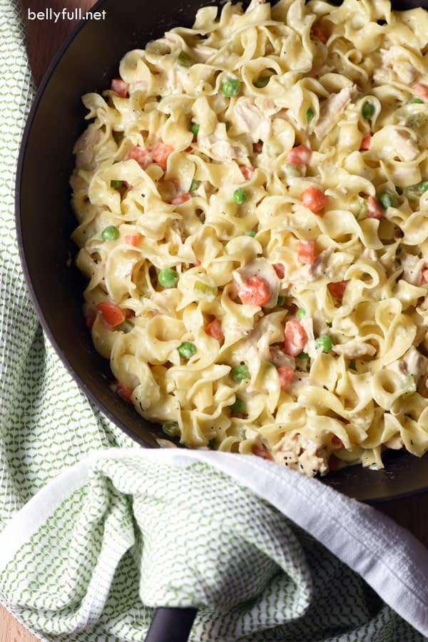

Home
Chicken Pot Pie Pasta

Description
Traditionally pot pie is made with a crust. But this rendention of
Chicken Pot Pie we switch the crust for pasta noodles! You still get
all the vegitable goodies inside and the yummy creamy sauce, you just
have pasta instead of a pie. Which is better in my opinion anyway.
Ingredients
- 10 ounces of egg noodles
- 2 tablespoons unsalted butter
- 1 medium sweet onion, diced
- 2 cloves of minced garlic
- 1 1/2 cups of frozen peas and carrots
- 1/2 teaspoon kosher salt
- 1/4 teaspoon black pepper
- 2 tablespoons all purpose flour
- 1 cup low sodium chicken broth
- 1 cup of heavy cream
- 1 1/2 cups cooked chicken breast, cubed
Directions
- Cook noodles al dente, according to package directions
- In a large skillet, melt the butter over medium - high heat.
Stir in the onion, garlic, and peas and carrots; season with
salt and pepper. Cook for about 3 minutes until onions are soft
and translucent. Stir in the flour until combined.
- Pour in teh chicken broth and heavy cream; bring to a boil.
Reduce to a simmer. Stir occasionally until thickened, about 5 minutes.
- Drain the pasta and add to the skillet, along with the chicken.
Taste and season with a touch more salt and pepper, if necessary.
- Serve hot and enjoy!